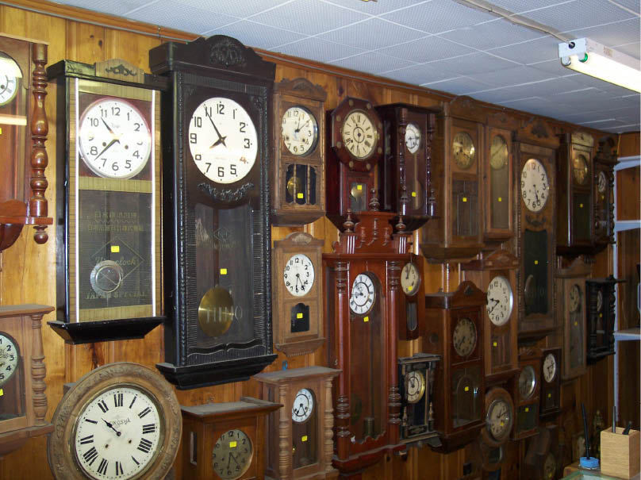

Proud German Heritage
A family owned business originating in Germany, now into it’s third generation, continues the tradition of mechanical clock, electronic clock and watch repairs. Since 1972 our old-fashioned commitment to quality and service has earned us a loyal customer base. We always strive to do the best possible work and to provide our customers with the best service. When it comes to buying a clock or watch, we are excited to share our passion and knowledge with you, and will help you pick the time-piece that fits you best.
